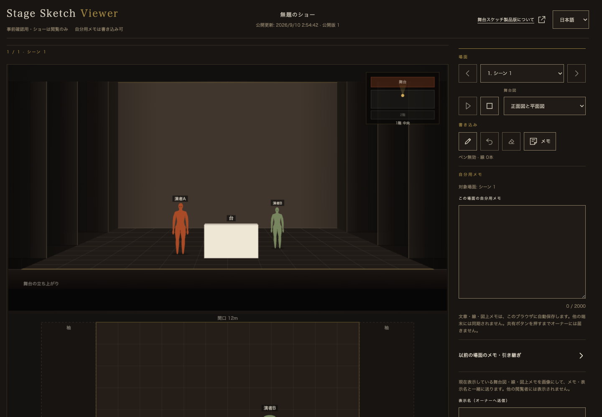
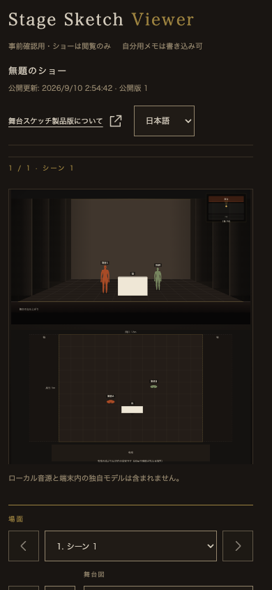

ショー情報を上部中央へ
2026年9月10日。PCは左にStage Sketch Viewerと役割、中央にショー名・公開更新日時・版、右に製品案内と表示言語を配置しました。「公開された内容を表示しています。」は正常表示時に非表示とし、その分の高さ・余白もなくしています。書体・色・文字サイズは既存の値を継承。
1100px未満ではショー情報を次の行へ、699px以下ではブランド→情報→操作の順に並べます。読み込み中、通信エラー、無効なリンクの案内は表示します。
起動中のViewerで確認する。元のタブでも最新版を再読み込みして、中央配置と通常表示文がないことを確認しました。
PC・1440px

スマートフォン幅・390px

確認：日英×1440・768・390・844pxの8条件。PC中央位置、要素の重なりなし、横はみ出しなし、正常状態文の占有高0、通信エラー・無効リンクの表示維持を確認。関連Nodeテスト61/61、変更JS構文、build_stage.py --check、build_study.py --check、git diff --check成功。iPhone・iPad実機は未確認です。
公開ビルド検査には、別作業のtry.html・描画・翻訳・CSSなどの生成物の未更新が残っています。無関係な未コミット差分を巻き戻さず、今回の対象だけ編集しました。
画面計測結果 · 関連テスト · 公開ビルド検査 · トークンシート
変更：study.html、stage-study.css、stage-study-viewer.js、build_study.py、生成されるstudy-frame.html、トークンシート、この記録と画面検証資料。保存・認可・サーバーの変更はなく、新しいCloudflare設定やmigrationは不要です。commit・push・デプロイ・公開・外部送信・秘密情報登録は行っていません。